3-skiktsarkitektur, MVC och Dataintegritet
Redovisning av laboration
För att få en hållbar struktur i kodbasen valde vi att bygga systemet utifrån en tydlig 3-skiktsarkitektur:
OrderDB) som hanterar all SQL och kommunikation med databasen.Det primära fokuset i projektet var att lära sig implementera MVC i praktiken och separera systemets olika ansvarsområden.
CartInfo) innan det skickas till vyerna, vilket ger ett frikopplat och säkrare system.Vid designen av systemet krävdes noggrannhet kring hur data hanteras när flera användare interagerar samtidigt, särskilt vid utcheckning.
stock = stock - ? AND stock >= ?).Klassdiagrammet illustrerar det linjära flödet från UI, via DTO:er och Services, ner till Databasen.

(Utdrag ur det kompletta klassdiagrammet)
Frågor om implementationen eller arkitekturen?